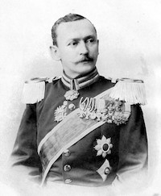
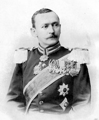
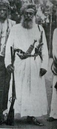
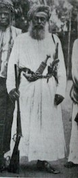

Hermann von Wissmann
Hermann von Wissmann

niedergeschlagen. Wissmann wurde daraufhin als Reichskommissar in Deutsch-Ostafrika eingesetzt. Der Widerstandsführer 
Al Bashir ibn Salim al-Harthi (Abushiri)
Al Bashir ibn Salim al-Harthi (Abushiri)

wurde hingerichtet. Seine ausführlichere Biographie findet sich hier. Der Öffentlichkeit in Deutschland wurde das Eingreifen des Reiches als Maßnahme gegen den arabischen Sklavenhandel dargestellt, die in Übereinstimmung mit den internationalen Rechtsbestimmungen der sog. „Kongoakte“ (38 Artikel, die als Ergebnis der Berliner Afrikakonferenz 1885 verabschiedet wurden) vorgenommen wurde. Die Unterbindung des ostafrikanischen Sklavenhandels gelang zwar langfristig, wurde jedoch durch ein neues Unrechtssystem ersetzt (vgl. Gründer 2018, S.96; Tetzlaff 2018, S.75-76).
